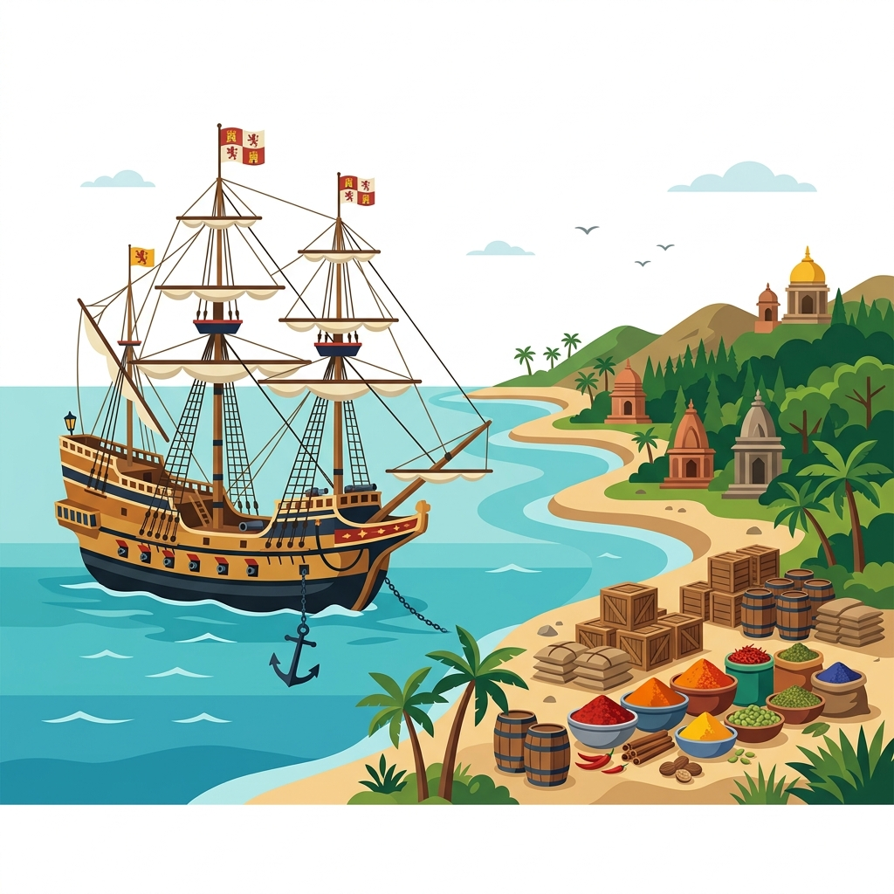
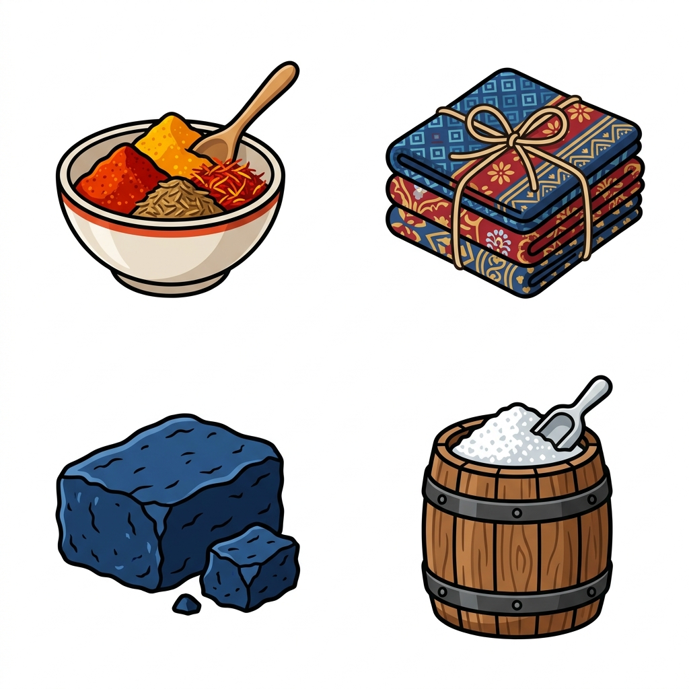
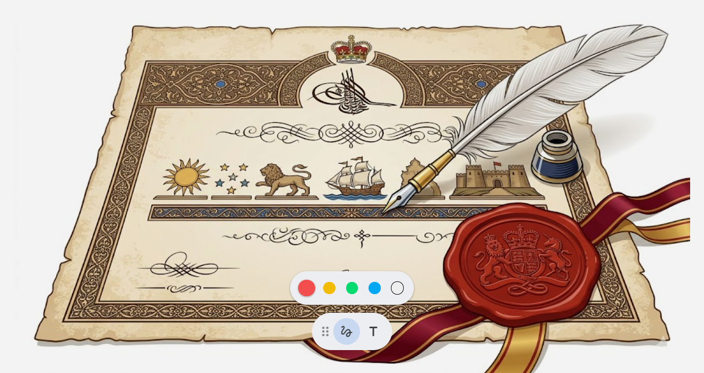

The arrival of Europeans in India dramatically changed the course of Indian history. It began when the Portuguese explorer Vasco da Gama successfully discovered a new sea route to India and landed at Calicut in 1498. This marked the beginning of the European era in India.
By the sixteenth century, the Portuguese had established a strong colony in Goa. Following them, in the next century, India became a popular destination for a large number of European traders, adventurers, and missionaries from England, Spain, France, and Holland.
The Decline of the Mughal Empire: The Age of Imperialism in India began with the weakening and eventual disintegration of the mighty Mughal Empire. After the death of Aurangzeb, weak successors failed to maintain central authority.
This led to the emergence of many independent regional states like Bengal, Awadh, Hyderabad, and Mysore. Groups like the Sikhs, Marathas, Jats, and Rajputs also set up their own kingdoms. This fragmented and unstable political stage made it very easy for Europeans to take advantage of the situation.

Many European trading companies arrived and began establishing their trading centres mainly in the coastal areas of India. These trading centres were historically referred to as 'factories'.
Factories and Factors: The trading centres established by the European companies were called factories because they were the places where their officials, known as 'factors', worked and lived. Some of these factories were heavily fortified (built like forts) as a safeguard against rival trading companies.
The primary motive of these European companies was massive economic profit. They bought highly valued goods at very cheap rates from India, including:
They sold these Indian goods in Europe and America at extremely high prices. This huge profit margin inevitably led to fierce competition and wars among the foreign trading companies (like the Anglo-French rivalry or Carnatic Wars).

Bengal was one of the richest provinces in India. The British East India Company's ambition to control the lucrative trade of Bengal led to direct conflict with the regional Nawabs.
This was a monumental battle fought between the forces of the East India Company, led by the cunning Robert Clive, and Siraj-ud-Daulah, the Nawab of Bengal.
The Betrayal of Mir Jafar: The main reason for the defeat of Nawab Siraj-ud-Daulah was internal betrayal. Mir Jafar, the Commander-in-Chief of the Nawab's army, secretly wanted to become the Nawab himself. Robert Clive bribed Mir Jafar, who then convinced a large section of the Indian soldiers to throw away their weapons and not fight. Because of this treachery, Robert Clive won the battle easily, and Mir Jafar was installed as a puppet Nawab of Bengal by the British.
While Plassey laid the foundation, the Battle of Buxar was the true turning point in Indian history. It firmly established the British as the supreme political power in Bengal. The combined armies of Mir Qasim (Nawab of Bengal), Shuja-ud-Daulah (Nawab of Awadh), and the Mughal Emperor Shah Alam II were decisively defeated by the British forces.
Importance: After this battle, the East India Company became the real master of Bengal. They acquired the Diwani rights, which meant they now had the legal right to collect taxes directly from the rich province of Bengal, providing them with immense wealth to fund their further expansion across India.
After securing Bengal, the British embarked on a relentless campaign to subjugate the rest of the regional powers in India. The factors that favoured the British in winning these wars included their superior modern weaponry, better military discipline, and the disunity among the Indian rulers.
The British steadily defeated and absorbed major kingdoms and territories through various wars:
